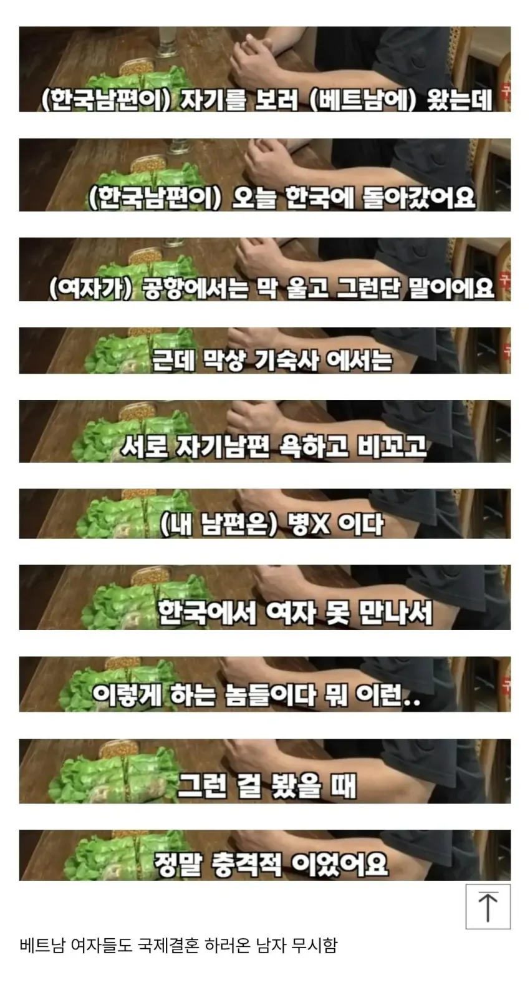

국결하는 베트남 여자들의 생각…JPG
댓글
목표는 국적따고 애 버리고
베트남 남자하고 도망가서 다시 사는 것 (한국에서)
엄밀히 말하면 병신과 시발련인가?
근데 이미 한국에 들어와서 결혼하고 애낳고 살고 있는데 자꾸 이렇게 인식 조지면 태어난 애들 범죄자 되라고 응원하는 꼴밖에 더 됨?
분위기보니 20년뒤 지방 소도시에 동남아 혼혈 갱 생기겠네 ㅋㅋ
이미 소도시는 학교에 다문화 애들 개 많지않음?
20년이라니 ㅋㅋ진짜 시골와보면 10년도 안걸릴느낌받을껄
근데 팩트잖아 ㅋㅋ
솔직히 매매혼인데 로맨스 기대함?
같은동네 장애인 아저씨분 과일장사 하시면서 생활 하시다가 국결 베트남 여자랑 하셨는데 어머니분도 며느리 잘대해주고 있는거 없는거 다 해드렸는데
2~3년 지내다가 재산 다들고 애들도 다 데리고 몰래 베트남으로 도망갔다
동네에 소문 다나서 응원해주고 어찌저찌해서 다시 과일장사 시작하셧는데 이 기간이 1년 걸렸음
국결은 진짜 복불복인듯
정사판 유저들이 이 글을 싫어합니다
정사판이 너무너무 증오스러운가보구나..
돈없어서 가난하게 살기 싫어서 팔려와놓고뭔 ㅋㅋ
그런 남자들한테 몸파는 자기는....역시 미개해서 그런지 결국 지욕하는지도 모르고 씨부려쌓네
애초에 나이 40넘게 먹고 매매혼 국결하는게 젤 큰 문제라고봄 우리나라야 초혼 연령이 ㅈㄴ 높아서 30에 결혼 못해도 별생각 없지만 해외는 대학 안가는게 디폴트고 앵간하면 대부분 20초중에 결혼함
40넘게 먹고 결혼하려고 찾으면 너무 늦긴해 .. 국결하는 사람들 대부분이 장모님 나이랑 본인나이랑 삐까뜰걸
진짜 업체혼 하려면 아예 빠르게 해야된다 본다 ㅋㅋ 그러면 누가 그 나이에 업체혼 하냐 😂 할건데
내 아는 분은 20대 후반까지 모솔이다가 30살
거의 되자마자 스탄 국가 분하고 국결해서 살고있다 연애혼 아니고 업체통해 만나셨고
뭐 본인도 이런저런 걱정 안했겠냐만
결국 잘 살고 있음 그만이지
결혼식도 갔다왔음
남자들은 군대 2년에 대졸 취준 등등 뭐 하다 보면 눈 깜짝하면 30이라 걍 진짜 메타인지 빨리해서 결혼 해야겠다 싶으면 걍 국결 30초반에 승부보는게 좋은거 같음
요즘 이런 국결 혐오 컨텐츠 많이 보이네 국결 복불복인건 국결이란 개념이 생겼을때부터 계속 있었던건데
옛날엔 공중파에서 국결해서 행복하게 사는 사람들이 주로 나왔고 요즘은 이런것들만 나오고.. 뭐가 달라진걸까
케이스가 많아지니 다양한 사례들이 나오는거고
지금도 잘사는 사람들은 여전히 잘 사니 조용하고
저런게 자극적이니 이슈되는거겠닝
복불복이 맞긴한데 유독 베트남 국결한 사람들이 문제 터지는 사례가 많이 올라온다는 느낌이 들긴 함
달라진 것들이 있지
베트남 여성들의 한국에 대한 인식도 많이 바뀜.
좋은 쪽이던 나쁜 쪽으로던.
그리고 나라별로 국제결혼 관련 준비 서류등이 많이 차이남. 어떤 곳은 매우 쉽고, 베트남같은 곳은 많이 어렵고 함.
이게 왜 그러겠음? 다 결과물이 있다보니 점차 바뀐거임.
모수가 많은 만큼 안좋은 쪽도 그만큼 튀어서 잘 보이는데, 그렇지 않은 나라도 있음.
사랑없이 돈보고 온건데 당연한거 아닌가
나도 어디 미국에 재벌 할머니랑 결혼해도 똑같이 생각할듯
실제로 미국에 할머니랑 결혼하는 중동남들 좀 있어
유럽 할머니들 상대하는 모로코 남자들 많음..
결정사로 결혼하는거랑 다를거없잖아
끼리끼리는 불변의 법칙임
보지가 갑이긴 하지 ㅋㅋㅋㅋㅋㅋ
한국 취집 상향혼 하는 마인드도 뭐 별반다르냐ㅋ
돈이지ㅋㅋ
이게 맞지 국결특으로 묶을거 아니라 상향혼특으로 묶어야지 ㅋㅋ
솔직히 걔들은 사람들이 욕하던 김치녀랑 다를게 뭔지 몰겠다
걔들이 그 누구보다 진심으로 돈보고 만나는건디.....
못사는 나라와 국결해서 아주 가끔 잘되는 케이스는 그거지
남자가 집도 좀 살고 외모도 좋으면 뭐 이것도 나쁘지 않겠다 싶어서 그냥 눌러사는거지
"씽크 선언하는 한국 여자들" 마인드도 비슷하지 않나
절대적인 혼인 건수로만 따지면 국결 매매혼이나 국내결혼 매매혼마인드 결혼이나 비슷할거같은데
맞는말인걸
에혀...이런 부정적인 글에 선동 당해서 뽕뽕이나 하지말고 마땅한 한녀 못만나면 젊을때 국결해라,,,
나도 내가 국결할줄 몰랐는데 존나 잘 살고 있다
그리고 존나 잘사는 국결가족들 많타
꼭 용기도 없는 놈들이 이상한거 퍼와가지고 ㅉㅉ
인구 8만명 사는 지방소도시 3년차 살고 있는데, 국결한 동남아 사모님 많음. 평범하게 잘 사심.
카페가서 소금빵+아아 마시고 ㅋㅋㅋ
한국말 서툴지만 소통되고, 동네 식자재마트는 동남아 식재료 코너 조금씩은 꼭 있음. 복지센터(동사무소)엔 각국(동남아) 가이드북 있어. ㅋㅋ할랄푸드 같은 동남아전용 슈퍼 종종 생기고, 큰맘먹고 식당(쌀국수,카레) 오픈하는 분들도 가끔 있는데 1년 못넘기고 자주 접더라.(이건 임대료+인건비 지출이 생각보다 컸거나 행정적으로 미숙해서 그런듯)
주말에 다이소에 동남아 청년들 쇼핑 많이함.
우즈벡남자들 자주 자전거 타고 다님. 떡대 큼.
다문화는 이미 진행중이고. 지방소도시엔 특히더 빨리 융화되고 적응되고 있음.
이상하게 베트남~인도네시아 청년들 다이소 엄청 좋아하더라.
그리고 중고 아반떼 사서 끌고다니는 우즈벡/러시아맨들 ㄹㅇㅋㅋ
이제 공존의 시대지. 어떻게 잘 융합시킬 것인가
빠른 메타인지 후 조금이라도 어린 나이에 동년배 찾아서 해야 그나마 실패라도 덜하지
베트남에서 여자애들만 대량 수입해와서 한국화 시키고 결혼시키면 안되나
뭘 눈치보고있냐 하고싶은대로하지 ㅋㅋ
근데 맞긴함
그런거 알면서 몸대주고 임신하는 년들도 병신인건 마찬가지고